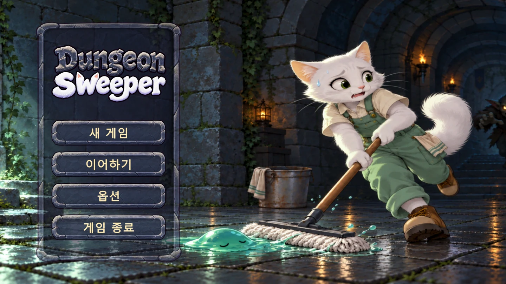
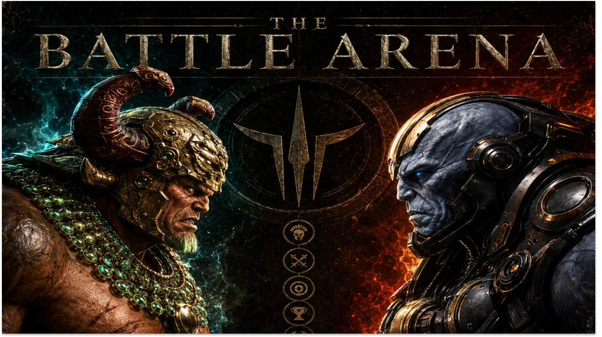

01 AI 리더십
수정 기준은 직접 정하고,
구현은 AI와 나눕니다.
몬스터가 추격을 너무 빨리 멈추는 문제를 발견하고, 마지막 목격 위치까지 수색하도록 Codex에 요청했습니다.
실제 요청과 플레이 결과PERSONAL PORTFOLIO
AI Game Maker
문제를 정의하고 AI에 구현 기준을 전달한 뒤, 플레이와 테스트로 결과를 확인합니다.

게임 타이틀 화면01 대표 프로젝트
DungeonSweeper01 PROBLEM SOLVING
01 AI 리더십
몬스터가 추격을 너무 빨리 멈추는 문제를 발견하고, 마지막 목격 위치까지 수색하도록 Codex에 요청했습니다.
실제 요청과 플레이 결과02 구조화 능력
무료 미니게임 전환을 입력 제거, 구버전 API 처리, DB 제약 변경으로 나누고 기존 기록 보존까지 검사했습니다.
변경 범위와 검증 결과03 학습 실행력
수식 입력이 반복되면 불편하다는 피드백을 캐주얼 모드와 별도 점수로 옮기고, 모바일 하단 입력도 개선했습니다.
피드백과 모드 설계02 SELECTED WORK
개인 게임의 기획과 AI 협업 과정, 팀 프로젝트에서 맡은 구현과 제작 도구를 정리했습니다.
01 개인 개발 / AI 협업
전리품 회수와 몬스터 추격 규칙을 설계하고, AI와 던전 제작 도구를 만들었습니다.
02 개인 개발 / AI 협업
일터 성장과 모의 투자 게임을 만들고, 무료 미니게임 전환과 기존 계정 보존을 구현했습니다.
프로젝트 보기03 개인 개발 / AI 협업
수식 입력의 피로도를 모드 분리로 개선하고, 브라우저 진행과 서버 최종 검증을 구성했습니다.
프로젝트 보기
프로젝트 대표 아트04 팀 개발 / 담당 기능과 제작 도구
팀에서 맡은 레벨 검증과 JSON 도구를 중심으로, 제작 문제를 검사와 수정 단계로 나눈 과정을 보여줍니다.